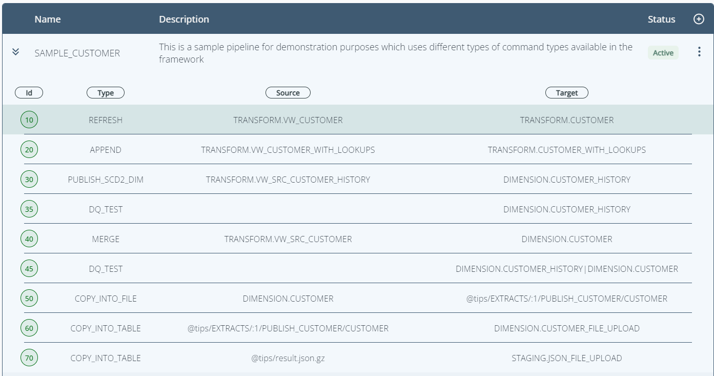
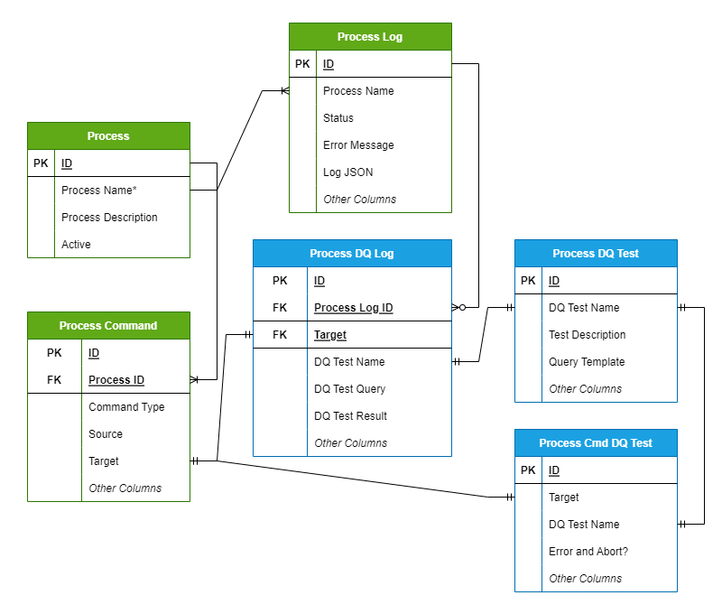

Introduction to TiPS (Snowpark)
What is TiPS?
TiPS is a simple data transformation and data quality framework built for Snowflake.
With TiPS, building data pipelines is as easy as writing your transformation business logic in a database view which acts as data source, have a target table defined where this transformed data would land and add a metadata record in TiPS metadata table and that's it. You don't need to write or execute any DML statements for movement of this data. TiPS at runtime would dynamically generate and execute all DML statements relevant to the steps of data pipeline.
Along with INSERT/APPEND/MERGE/DELETE/TRUNCATE, TiPS also comes pre-built with command types like:
- PUBLISH_SCD2 - supports pushing data to SCD2 (slow changing type2) dimension, where for changed records, a new record is inserted, and existing record is updated with applicable effective start and end dates
- COPY_INTO_FILE - supports extracting data from snowflake database to a file in a stage. Stage can be external, internal or a named stage.
- COPY_INTO_TABLE - supports loading data from a staged file into snowflake database table. Stage can be external, internal or a named stage.
Details about all possible command types in TiPS are listed on reference guide page
The ideology behind TiPS was to create a framework that an experienced database professional, already adept with SQL, could easily deliver data pipelines with virtually zero learning curve.
A data pipeline in TiPS is made up multiple steps that can be chained together, with each step performing its own operation to move data from source to target or checking data quality. Steps within a data pipeline can perform one of two things:
- A movement of data from a source to a target. In most cases the sources are database views encapsulating transformation logic in the desired form, while the targets are database tables.
- A data quality check to make sure data being moved from source to target conforms to the desired form, before getting consumed by the data consumer and thus providing inconsistent results.

TiPS was built with security in mind. The database credentials used to execute a pipeline do not require read/write access to the underlying data, in this regard TiPS differs from other data transformation tools. We believe that data pipelines should be idempotent, this being the case if pipeline execution credentials were ever leaked the worst-case scenario is that a pipeline could be re-executed (compute costs would increase but data integrity would not be compromised).
What TiPS is not?
TiPS is not a scheduler/orchestrator tool:
TiPS doesn't have any scheduling or orchestration capabilities built in. Orchestrating or scheduling for execution of data pipelines on a regular interval, can be done through other tools like Airflow, Control-M or Unix Cron for that matter.
TiPS is not a Data Ingestion tool:
TiPS is a transformation framework, and is not placed to be a replacement for data ingestion tools like Fivetran, Matillion etc. With TiPS, usually the starting source of data for the data pipeline is, either data already landed into Snowflake tables from source, or from files stored in a Snowflake accessible stage (external or internal, E.g. S3 on AWS).
How does TiPS work?
TiPS is a simple to use Metadata driven transformation framework. All the metadata is stored in database tables in Snowflake, which can easily be interrogated using normal SQL commands.
All TiPS objects are first class database objects
When run in Snowpark through stored procedure, TiPS provides an extra security feature where the executing user of the stored procedure doesn't need to have direct read/write privileges on the underlying table/data. User calling the stored procedure only needs privileges to execute the stored procedure.
TiPS Metadata Tables:

- PROCESS - Holds information about Data Pipeline e.g., Name and Description of Data Pipeline.
- PROCESS_CMD - This table holds information about individual steps within a data pipeline.
- PROCESS_LOG - This table is populated with data pipeline execution logs when data pipelines are run through TiPS
- PROCESS_DQ_TEST - This table is shipped with some preconfigured DQ tests. New tests can be configured by the users themselves into this table.
- PROCESS_CMD_TGT_DQ_TEST - This table is configured with Linking DQ Tests to the Target (table).
- PROCESS_DQ_LOG - This table is populated with data quality test execution logs when data pipelines are run through TiPS. Data in this table is tied up to
PROCESS_LOGtable throughprocess_log_idcolumn.
Licencing
TiPS is licenced under the MIT Open Source licence giving you flexibility to use it as you wish.
Any feedbacks and suggestions for improvements are always welcome. Kindly add your feedbacks/suggestions using GitHub Discussions